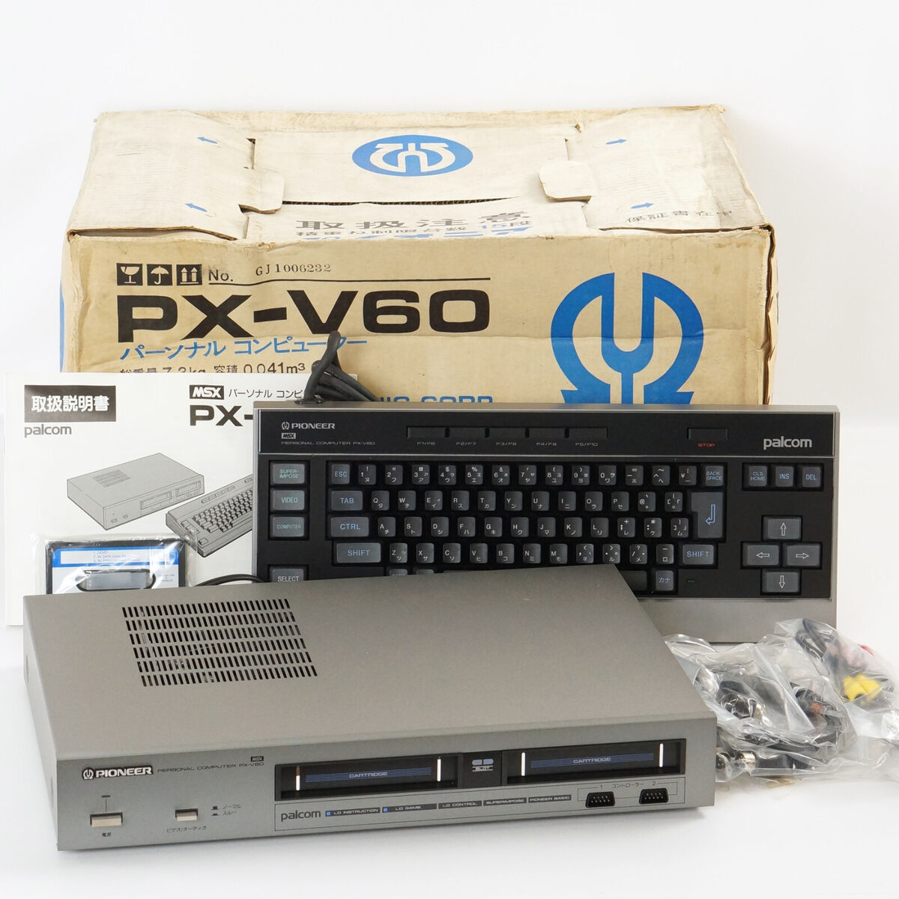

MSX11986
Pioneer PX-V60
De PX-V60 is een hele fraaie MSX1.
- Merk
- Pioneer
- RAM
- 32 kB
Het verhaal & de details
De PX-V60 is een hele fraaie MSX1. Pioneer heeft de computer vormgegeven als een audioversterker. Het is in de basis een eenvoudige MSX1 met 32k geheugen. De PX-V60 kan echter aangesloten worden op een laserdisc speler en heeft superimpose mogelijkheden. Het is een Japanse computer die werkt op 110 volt.
- Bijzonderheden
- superimpose functie, laserdisc support, form factor
Modelfoto: Oorspronkelijke collectiepagina